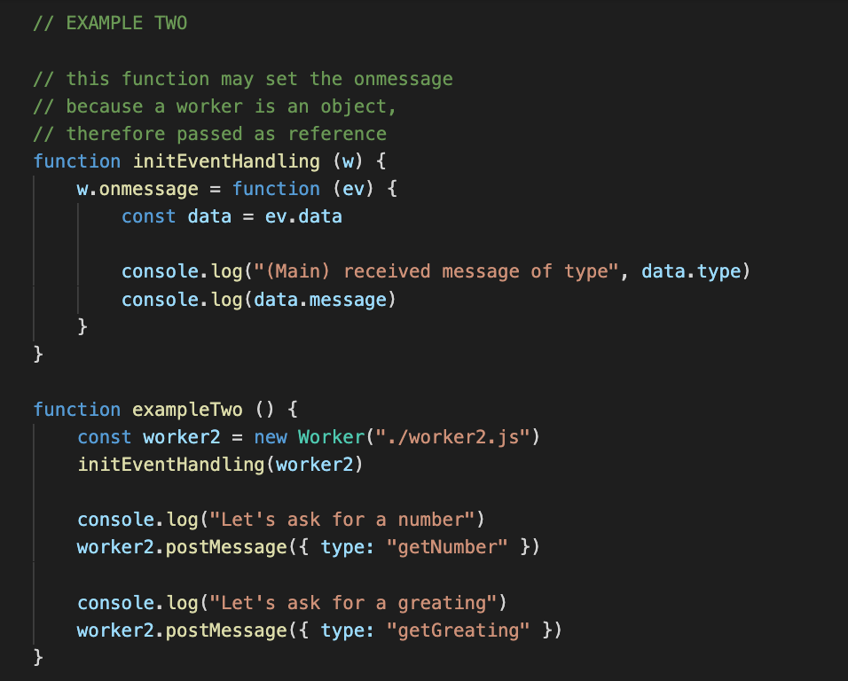
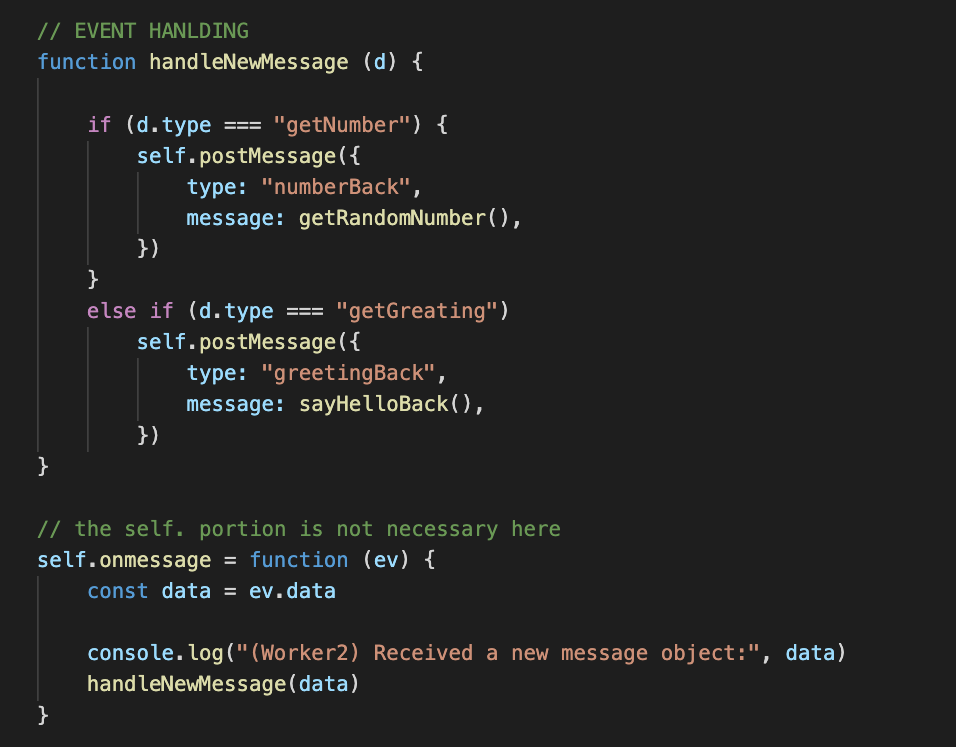
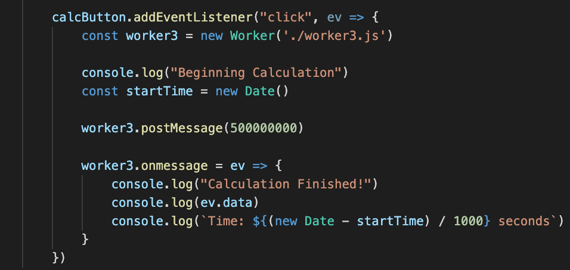
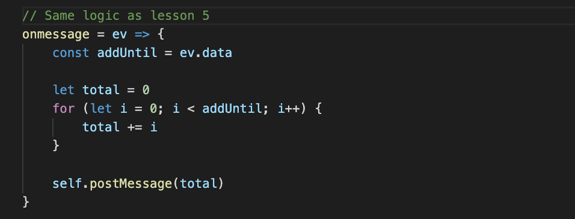

Web Workers have the ability to send messages back to the main thread
They access their global scope via the self key word
self.postMessage()
Objects may be sent, giving more flexibility
In order for the main thread and a various web worker to communicate, both will need to define onmessage and postMessage() functionality.
In the main thread, these will be defined as a part of the (already instantiated) web worker
In the web worker, they will be defined as a part of self
Main:
 Worker:

Primary Use Cases
Large data computation
Background "I/O"
Large DB updates
Massive file upload
Polling
Let's now compare this to the calculation done in Lesson 5, on the event loop. Before web workers, we could only rely on async computations to make large calculations without blocking the main loop.
Main:
 Worker:

Final Thoughts:
Web Workers are a powerful tool for keeping the main thread open
The main thread still controls the DOM/view
Web Workers are great for computationally/time intensive tasks